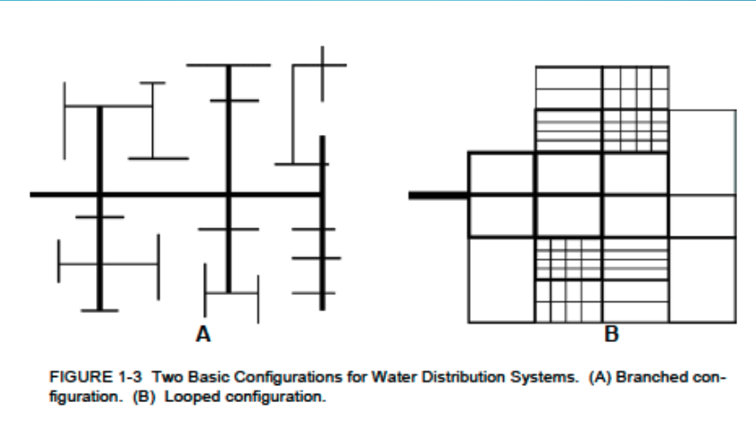
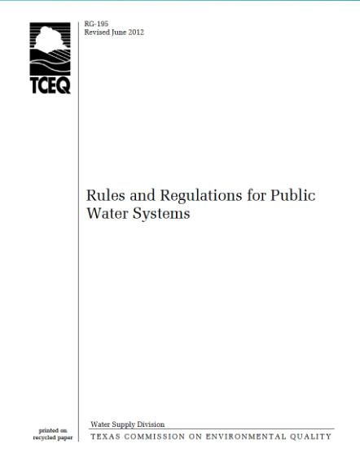
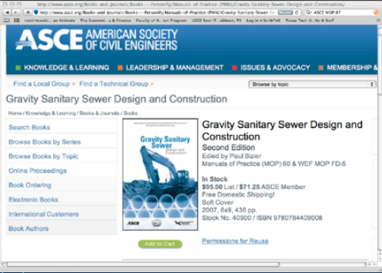

2. Drinking Water Design Guidelines¶
Course Website
Readings¶
TCEQ (2012) Rules and Regulations for Public Water Systems, Publication RG-195 http://54.243.252.9/ce-3372-webroot/3-Readings/Texas-RG-195/rg-195.pdf
Krueger D. W., and Smitha C. W. (2012) Infrastructure Design Manual, City of Houston, Department of Public Works and Engineering http://54.243.252.9/ce-3372-webroot/3-Readings/HoustonDesignManual/Houston.idm.pdf
City of Lubbock (2018) Minimum Design Standards and Specifications, City of Lubbock Engineering. http://54.243.252.9/ce-3372-webroot/3-Readings/LubbockTexasDesignManual/LubbockTexasDesignManual.pdf
City of San Marcos, Texas (2019) WATER DISTRIBUTION SYSTEM DESIGN CRITERIA TECHNICAL MANUALhttp://54.243.252.9/ce-3372-webroot/3-Readings/SanMarcosTexasDesignManual/SanMarcosTexasDesignManual.pdf
Lesson Outline¶
Design Concepts
Four Questions to Inform Design
Guidance Documents
Design Concepts¶
Note
Design generalities are paraphrased from [] and [].
Design is the management of constraints.
Non-negotiable constraints are dictated by laws of physics, chemistry (and to some extent mankind); examples of these are: water flows downhill unless power (lift station) and money (capital cost to build, operation cost to pay for electricity to run pumps) are applied; Chemical disinfection residual will decay over time unless replenished; this constraint encourages using treated water relatively quickly.
Negotiable constraints are the design variables that can be adjusted to satisfy the non- negotiable constraints and the desired system performance; the main components of this category are money to pay for things, time to build (and operate), aesthetics (pipe alignment/channel geometry); system performance under various anticipated conditions.
The water system designer’s goal is to satisfy a need (some level of performance) by manipulating the negotiable constraints.
Analytical tools (models) are used to test the design before committing to an actual build (presumably so that full-scale experiment fails are avoided).
Design guidelines are encapsulated in
regulatory documents,
design manuals,
professional literature,
and manufacturer’s literature
These guidelines collectively represent centuries of observation and experimentation (and a lot of failures); the value is that they generally work, and reduce commercial risk for routine water system components.
Four Questions to Inform Design¶
Four basic questions in water distribution design are:
How much water will be used?
Where are the water supply locations?
Where are the water consumption locations?
What is the water use as a function of time?
How Much Water?¶
This question is related to the demand for water.
When designing new systems, calculating demands is not a straightforward process. The designer needs to know the expected demands, possible fire demands, and future expansions.
There are some publications that provide average demands for residential,commercial facilities, and production/industrial facilities.
Note
Finding/building a modern database of such information would be a good data science project (ENGR 1330)
Different demands that need to be accounted for:
Customer demand: Average use needed to meet non-emergency needs.
Fire flow demand: The computed system capacity required for ensuring minimum fire protection while maintaining a minimum working pressure in the system. This demand is often stipulated in municipal design guidelines either explicitly or by virtue of fire hydrant location and spacing and flowrate/hydrant
Ultimate expansion of the system (forecast the future)
Water distribution systems convey water from a source to a customer.
Ground water: Series of municipal wells usually requiring chemical treatment, at least to the extent of chlorinating (disinfecting).
Surface water: Drawn from lakes or rivers just below the surface. Ocean-desalination plants on or near coastal regions.
Precipitation: Large municipal reservoirs collecting rain runoff and snowmelt (rainwater harvesting).
Transmission and Distribution Mains¶
Transmission lines are conduits that carry large volumes of water, great distances, such as between a raw water source and a treatment plant and/or local storage facilities.
Distribution lines are smaller pipes, valves, hydrants, fittings, and appurtenances, that deliver treated potable water to the customers.
Distribution System Types¶
A water distribution system’s design is crucial to providing customers with good water quality at an acceptable pressure level. A good distribution system configuration also helps meet the required water demands and limit the number of customers who run out of water during outages. The three most common distribution design configurations are:
Arterial loop systems. This design surrounds the distribution system with a large-diameter water main that provides adequate flow to the interconnecting distribution system from different locations. This layout design creates greater flexibility by supplying water to the distribution system from multiple locations.
Grid systems. This configuration allows water to circulate through the entire system, which is typically fed by an arterial main or a single transmission line. The layout structure distributes water to multiple areas with better quality, pressure and flow rate.
Tree systems. This configuration is fed by one large water main that branches off into smaller distribution mains, which may result in reduced water pressure and flow.
Note
Arterial loop and Grid systems are practically the same thing; if your client is skeptical about loops, then sell grids (and visa versa)

Branched System¶
Also referred to as a Dead-end System, the size of the main line in this distribution system decreases as its distance from the source increases, in consideration that the further pipes have to carry less water. The design of a branched system is generally straightforward, where the direction of water flow in all pipes and the flow rate can be readily determined.
Advantages:
Lower costs: Avoiding construction of pipes and appurtenances just to create a looped system reduces the cost.
In smaller rural communities, branched systems may be the only type that is feasible, logistically and monetarily.
Disadvantages:
Main breaks take all downstream customers out of service.
Branched systems cause poor chlorine residuals in low demand areas and may require periodic flushing of hydrants in order to pull chlorinated water into the system.
Velocities are faster, head losses greater and capacity reduced especially during high demand.
Fire protection is at risk due to inability to isolate a break.
Looped System¶
A distribution network is looped when there are only a few or no pipe dead-ends, such that water can move through the system freely.
Advantages:
Fluid velocities are lower, reducing head losses, resulting in greater capacity.
Main breaks can be isolated to minimize loss of service to customers.
Fire protection is greater due to greater capacity and ability to isolate breaks.
Looped systems usually provide better residual chlorine content due to inline mixing and fewer dead ends.
Disadvantages:
Looped systems generally cost more because there are pipes that become inadvertently redundant in order to create the loops.
A major design consideration is to ensure that if any section of the distribution main fails or needs repair, that section can be isolated without disrupting service to all or a great number of users in the network.
Appurtenances¶
Appurtenances are common accessories of a functional water distribution system that aid the operators and improve the water quality. Examples of such appurtenances include:
Pipes.
Valves.
Elbow and bend fittings.
Service saddles.
Pressure release valves; Blow-offs.
Fire hydrants.
Air release and vacuum valves.
Guidance Documents¶
Regulatory guidance documents are a principal tool in system design, along with the designers creativity, and the owners access to right-of-way.
The U.S. EPA (Environmental Protection Agency) writes federal regulations for construction, maintenance, treatment and operation of potable water facilities.
State’s EPAs(or equivalents) are charged with regulating the standards and permitting. States may write more stringent regulations if they do not violate the intent of the federal code. The various documents are precise, but teduous.
RG-195 Texas Drinking Water Systems Guidelines¶

A collection of relevant guidelines for use in Texas are contained in the document http://54.243.252.9/ce-3372-webroot/3-Readings/Texas-RG-195/rg-195.pdf
Representative Regulations¶
Visit each jurisdiction’s website for current design guidance! The contents change from time to time - some the copies referenced here are over a decade old; they are fine for use in this class but not for actual engineering design. As examples consider:
Here are a few Texas cities as examples
City of Houston manual
City of Lubbock manual
City of San Marcos manual. I specify this one for your homework assignments, because it is not too long, so things are easy for you to find
Use the manual for the locality of your project!
Professional Literature¶

For unusual situations the designer will likely have to visit the professional literature for guidance
Order of preference for a designer will be:
a manual of practice,
vendor literature,
and finally the academic literature.
A manual of practice or even vendor literature is preferred over the academic literature simply because of a perception that the technologies are proven in these documents (proven in the litigation sense).
Existing Data¶
The designer will need reliable sources to determine demands.
Obviously a discussion with the owners is critical but the actual quantities will have to be calculated for a design situation.
A land use plan or zoning map will help to determine the future demands.
The demands need to be compiled and situated on an area map.
Once complete this map can help determine node locations and pipe diameter for the system schematic
PIPE DIAMETER
The selected pipe diameters affect system hydraulics.
The trench is the biggest cost, and the hydraulics should be used to set adequate pipe sizes.
Designers need to determine the proper pipe size in order to meet peak demands and fire protection while maintaining an adequate dynamic pressure in the system.
PRESSURE ZONES
Pressure zones are set up to regulate pressure in locations where large grade changes will create too much pressure at the lower end of the system and not enough pressure in the higher ends.
More than an 80 feet differential will require a pressure zone.
In areas of even larger grade differentials, such as hill country or mountain communities, several consecutive pressure zones may be needed.
The following equations can assist in determining the HGLs for the pressure zones.
\(HGL_{min}\) = Highest Elevation + (2.31x Minimum Working Pressure)
\(HGL_{max}\) = Lowest Elevation + (2.31x Maximum Working Pressure)
def hglmin(pressure,elevation):
hglmin = elevation+2.31*pressure
return(hglmin)
def hglmax(pressure,elevation):
hglmax = elevation+2.31*pressure
return(hglmax)
pmin = 30 # pressure in psi (about 2 atm)
pmax = 90 # pressure in psi (about 6 atm)
emin = 5 # low elevation in feet
emax = 95 # high elevation in feet
print(hglmin(pmin,emax))
print(hglmax(pmax,emin))
164.3
212.9
JUNCTION LOCATION AND ELEVATION
Location of junctions will depend more upon the planned layout of the project site than the affect they will have upon the hydraulic model.
In general grid distribution node locations have little affect upon the overall model since there are customer demands along the real system between nodes. Node locations and their elevations are more relative in large transmission mains.
Nodes generally should be placed at the lowest elevation of a looped system where the grades uctuate signicantly.
MATERIALS
The pipe materials will effect system performance.
Water distribution systems are built from ductile iron pipe, ABS, PVC, and HDPE.
All are good materials for specific applications and various fittings to join different materials are available.
Different jurisdictions may specify specific materials; the designer needs to read the guidance document for the specific locale.
Important considerations for water distribution system design¶
Around 2.2 million miles of underground pipes support the drinking water infrastructure system in the United States. The aging water system, however, requires upgrades in thousands of communities across the nation to prevent water main breaks and a daily loss of billions of gallons of treated water. If you are a municipal leader, it can be challenging to decide whether to implement upgrades or design a replacement distribution system for your community.
Below, are some important factors that can influence conceptual or design decisions for water system upgrades or replacements, and aspects to consider while developing system layout plans.
Planning a water distribution system design: factors to consider¶
Whether a community needs an upgrade, an expansion or a replacement system, planning is critical for designing an effective water distribution system. Beyond primary concerns, like availability, reliability and quality of water in an area, the community size, type and average usage can also guide water distribution system designs. After initial project review comes layout and permitting, followed by design plans and production. Construction only commences after these planning stages are complete.
Design elements can be significantly influenced by certain factors. The table below lists important details to consider, and explains why and how they might shape the initial designs of a water system during the planning stage.
|FACTOR |WHY |HOW|
|:::|:::|:::|
|Age|- Built in the 1970s and 1980s, the average water network pipe is about 45 years old.
- Some U.S. systems have pipes older that one century.|Replacing worn components in older systems must be a priority.|
|Geography/climate|-Extreme temperatures, topography, elevation, soil composition and local geology influence decisions about installation and materials.|- Varying elevations need greater pumping capacity than flat terrain.
- Freezing temperatures influence choice of pipe materials and installation depth.|
|Water usage |- Partial service line replacements may increase lead levels in drinking water if they disturb lead-bearing pipe scale
- Scale, the build-up of minerals coating pipe interiors affects hydraulics.
| -Critical factors affecting distribution pipe size and storage and pumping facility size include:
- Average Day Demand.
- Peak Hour Demand.
- Fire Flow Demand.
More demand = greater capacity.|
|Environmental requirements|- Local, state and federal regulations dictate minimum drinking water quality.
- System design standards may include permits for installation, excavation and offset distances from other facilities.|- Designs must meet state and local standards for water quality and distribution systems, which may differ from federal regulations.
|Project budget|- Building or expanding water distribution systems is an expensive project that requires significant funding.|- The project budget in terms of funding and costs determines the scope of the project.
Funding could be shared by the customers or funded through grants or government revolving loan programs.
- More money = broader scope.|
Demand forecasts|- Projections for population growth and fire protection requirements should influence designs for water distribution systems.|Design plans must include elements of expansibility to accommodate increasing populations.
- More money = broader scope.|
These initial design considerations, in turn, determine the layout of a water distribution system. Below, are some common system layout types, configurations and the roles of various appurtenances.
Key aspects of water distribution layout design¶
The layout of a water distribution system involves input from several teams, including the utility engineering department, engineering consultants, distribution operators or field operators, and others. Most design input focuses on the logistics and implementation of a water distribution system.
Layout
The distribution layout of a water system includes disinfection treatment facilities, pipelines (mains and services), and appurtenances like valves and fire hydrants. Engineers typically calculate a water system distribution layout using parameters like:
Flow rate.
Water demands.
Pressure.
Other Utilities.
Material selection.
Municipal ordinances.
Flow velocity.
Fire flow requirements.
Topography.
Construction budget/funding.
Right-of-way limitations.
Environmental regulations/requirements.
It is worth noting that several of these parameters are usually considered during the initial planning phase, but input from field operators can help refine layout design calculations.
Notice that most of the manuals (above) spend considerable space explaining how drawings are to be submitted for approval. The actual layout is flexible (within right-of-way) and up to the hydraulic engineer to some extent.
A designer would typically use some version of the following workflow to design a water distribution system:
Set up the distribution system grid on the area plan. Aerial photo plots to scale are excellent tools
Allocate average daily demands at nodes;
Determine the peak factors;
Estimate fire demands;
Project demands for future expansion of the service areas;
Test design(s) using a hydraulic model;
Choose a design that is feasible economically and hydraulically that satisfies end user needs.
A node is considered a junction point in a system where a demand can be attributed/assigned.
Models use the nodes to calculate the system demands, pressures, water quality, and velocity. These items are usually prescribed in guidance documents with minimum/maximum acceptable values.
Models are used to test the design before commiting to a real-world build.
The practical design of a water system without the use of water distribution modeling software is possible, but requires a logical, economical approach of laying out the system (and some roll-your-own calculations).
Professional quality software is inexpensive (free) so there is really no good reason to design a system without using a hydraulic model - hence the guidance documents almost expect a model.
Commercial value-added software is usually far easier for a designer to use and integrated into other design tools, but is computationally about the same as free software
A designer should use commercial software when it is available to them, the time savings can more than justify the license costs.
Software Aided Design¶
There are several pipe network analysis software (also called network simulation software, or hydraulic network modeling software) that mathematically solve hydraulic equations for all interconnections, branches and loops of the pipe network. With the advent of such powerful software, the conventional methods of water distribution design have been mostly discarded. The computer software requires the designer to create a water supply system model by inputting in the computer program information that includes pipe lengths, junctions or node elevations, connectivity of the pipes and nodes, demand in each node, information on pumps, elevations of reservoirs, elevations, and yield of sources.
Among the current software available on the web and from proprietary sources, the EPANET is often used. EPANET is public domain software developed by Water Supply and Water Resources Division (formerly the Drinking Water Research Division) of the U.S. Environmental Protection Agency that can be downloaded for free on the internet. The software tracks the flow of water in each pipe, the pressure at each node, and the height of water in each tank.
The important features of EPANET for distribution network design is its ability to:
Handle systems of any size;
Compute friction head loss using the Hazen-Williams, the Darcy Weisback, or the Chezy-Manning head loss formula;
Includes minor head losses for bends, fittings, etc.;
Models constant or variable speed pumps;
Allows storage tanks to have any shape;
Allows control rules to change valve settings in response to system hydraulics.
The design process using EPANET usually involves the (a) layout of the system configuration including locations of sources and storage facilities, (b) determination of the distribution of demands to the nodes, input of network data, running hydraulic simulation, viewing results in any of the variety of formats, modifying the model by editing the network data, and modifying the model until the design criteria are met or results are acceptable.
Workflow for Distribution System Design Using Computer Software¶
Base Mapping
Detailed maps of the project area should be gathered as a basis for pipeline alignment, distance and elevations. These should be obtained from field topographical surveys or certified suppliers of map products. For preliminary analyses, the Google Earth (http://earth.google.com) internet site which makes it possible to view and print aerial images of the area being designed may be used.
The information in the maps should be correlated to produce a base map, on which the proposed system layout will be drawn. The designer should conduct an visual inspection of the whole project area to verify, validate and update the information on the source maps. The resulting base map must include positions and information on roads, streets, rivers, creeks, elevations, topographic contours and locations of built-up areas. It should also provide relevant information like potential large consumers, e.g., swine and poultry farms. Ideally, the base map should be scaled to some useful coordinate reference system (WGS; UTM; …).Water Demand Projection
The average day demand for the design year will be the basis of the hydraulic network analysis. The demand condition will be varied by adjusting the demand factor; that is 1 for the average day demand condition, 1.3 for the maximum day demand and 2.5 – 3 for the peak-hour demand.Tentative Layout
Using the base map, the designer should next develop a tentative layout of the pipe network, which should also show the positions of the source facilities and reservoir(s). Pipelines are to be laid on road right of way, and the network should cover the target consumers. Nodes are placed at locations for pipe junctions, street or road junctions and intersections, locations for water points, demand centres, and not more than 100 metres from the nearest node. In systems where it is expected that pressure will be generally low or fluctuating, nodes are placed at the highest points of the service area.Distribution of Demands
It is important to plot the town or community boundaries and the service area delineation on the base map. Once the tentative layout (with nodes) is plotted on the base map, the service area should be sub-divided into node areas. This will give the designer a working idea of the respective number of houses within the area covered by each node.
The projected average day demand for the design year is distributed to all the nodes within its delineated service area. The distribution of demands should take into consideration the relative number of houses for the different node areas.Encoding of Input Data
Most of the hydraulic analysis software have common input data requirements. These data are grouped into pipe data and node data. Pipe data are the assigned pipe number, pipe diameter (mm), C-value, the pipe nodes, and length (m). Node data are node number, elevation (m), and water demand (lps). Usually, the values of the design criteria are required by computer software.Hydraulic Network Simulation
With all the data having been input by the designer, the software can proceed with its hydraulic run. The software computes the head losses (m) in each pipe, the rate of head loss (m/km) in each pipe, the flow velocities (m/s), and the pressure in each node (m).
The model is run for: (a) its peak-hour demand condition, to check for the minimum value of the pressure in the system; and (b) its minimum demand condition, to check for the value of the maximum pressure in the network.
Operational simulations are then conducted to simulate a typical varying demand (hourly variation; …) to identify min/max pressures, check operation rules, size pumps and storage elements, determine water age in the network.Examination of Hydraulic Run Results
Usually, all possible hydraulic parameters can be shown from the computer run results. Of these parameters, the designer must examine two important results very closely: (a) The low system pressure points that are below the prescribed minimum pressure and the affected nodes, and (b) the pipes that have high head loss per km in excess of pipeline criteria.
The designer must also examine the balancing flows of the reservoir and analyze if the reservoir discharge or inflow is reasonable for its storage size.Adjusting Assumed Parameters of the Elements
Based on the results of the computer simulation, the designer will improve the network model by adjusting the pipe and node data for specific elements, particularly for those that did not meet the design criteria. For example, for pipes that have high resulting head losses, the designer will have to increase the pipe size to the next larger diameter. If there is a system pressure that is below the prescribed minimum, the designer could replace some of the pipes leading to the affected node with a larger diameter. The height of the reservoir could be adjusted if needed to achieve a good system pressure.
The adjusted model is run again in the software. After the run, the results are examined and the model readjusted. The above cycle is repeated until an acceptable hydraulic model is achieved.Finalizing the Network Configuration
The model is subjected to repeated simulation and data adjustments until an acceptable network configuration is reached.Reporting Results
A modeling report is usually necessary to exlain the modeling findings, and final design and will usually accompany various permit and funding applications (i.e. construction, environmental, …)